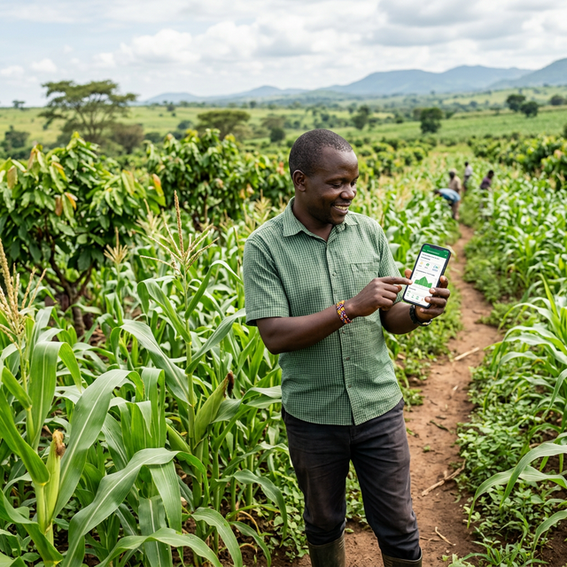

MDS
DES DONNÉES À LA DÉCISION,
DU CODE À LA CROISSANCE.
Votre Partenaire de Transformation Numérique à Cotonou, Bénin
Votre Partenaire de Transformation Numérique à Cotonou, Bénin
"La meilleure technologie est celle qui disparaît derrière les résultats qu'elle produit."
— Joël Mintchi, Directeur Exécutif

Co-fondateur · Directeur Exécutif
8+ ans d'expérience
"Le numérique en Afrique de l'Ouest, c'est encore trop souvent des sites vitrines que personne ne visite, des logiciels que personne n'utilise et des projets qui finissent dans un tiroir.
Chez MDS, on fait l'inverse. On commence par comprendre votre business — vos vrais problèmes, vos vrais blocages, vos vraies pertes de temps. Ensuite seulement, on code.
Chaque projet qu'on livre a un objectif mesurable : du temps gagné, des coûts réduits, des revenus en hausse. Si on ne peut pas vous montrer le ROI, on ne lance pas le projet.
En 8 ans, cette approche nous a permis de livrer plus de 50 projets dans 10 secteurs différents, de la clinique qui a réduit ses erreurs de facturation de 70% à la startup qui a multiplié sa conversion par 4.
Cette brochure vous montre exactement ce qu'on fait, comment on le fait et les résultats concrets qu'on obtient. Pas de buzzwords. Que du concret.
Prêt ? Parlons de votre prochain défi."
Joël Mintchi
Pas de promesses vagues. Chaque projet est évalué sur des KPIs concrets : temps gagné, coûts réduits, revenus générés. On mesure tout.
Un interlocuteur dédié, des réponses sous 24h, un suivi transparent. Vous ne parlez jamais à un robot. On est là, 6 jours sur 7.
Chiffrement AES-256, HTTPS partout, sauvegardes automatiques. Vos données et celles de vos clients sont sacrées.
Premiers résultats en 30 jours. Cycles courts, livrables fréquents. On avance vite parce que vos concurrents n'attendent pas.
Vos données brutes → tableaux de bord actionnables. Décidez avec les chiffres, pas avec l'intuition.
Sites qui convertissent, portails qui performent. Pas juste beaux — efficaces.
Vos tâches répétitives, automatisées. Jusqu'à 70% de temps opérationnel récupéré.
Apps qui marchent même sans internet. Pensées pour le terrain africain.
Documents d'une qualité publication internationale. Thèses, rapports bailleurs, actes juridiques.
30 min de diagnostic gratuit → feuille de route chiffrée. On comprend avant de coder.

Trop d'organisations prennent des décisions stratégiques à l'aveugle. Chez MDS, on transforme vos données brutes — ventes, patients, stocks, finances — en tableaux de bord interactifs que vos équipes utilisent vraiment, chaque jour. On ne livre pas juste un outil. On livre une nouvelle façon de piloter votre organisation.

Un beau site qui ne génère pas de leads, c'est un coût. Un site MDS, c'est un investissement : optimisé SEO, rapide, responsive et conçu pour transformer vos visiteurs en clients.

Chaque heure perdue à copier-coller, relancer manuellement ou compiler des rapports, c'est une heure qui ne crée pas de valeur. On identifie ces tâches et on les automatise. Définitivement.

En Afrique de l'Ouest, le réseau coupe. Les données se perdent. Les agents terrain abandonnent l'outil. Nos apps sont conçues pour cette réalité : offline-first, synchronisation auto, interface intuitive, compatibles avec tous les smartphones.

Un rapport mal formaté, c'est une crédibilité entamée. On utilise LaTeX — le même outil que les universités du MIT, Oxford et les grandes institutions — pour produire des documents d'une qualité irréprochable. Thèses, rapports bailleurs, contrats, publications scientifiques.

90% des projets tech qui échouent n'avaient pas de bon diagnostic au départ. Chez MDS, chaque projet commence par une analyse approfondie de vos processus. On identifie les 3 opportunités à plus fort impact, on chiffre le ROI, et seulement ensuite on propose une feuille de route.
Digitalisation du parcours patient
Valorisation du savoir académique
Précision et confidentialité
Pilotage de chantier temps réel
Croissance rapide et agile
Impact mesurable pour les bailleurs
Agriculture moderne et connectée
Inclusion financière numérique
Chaînes d'approvisionnement fluides
Enchanter chaque voyageur
Dossiers patients en papier, facturation manuelle, reporting chronophage — les cliniques perdent un temps précieux qui devrait être consacré aux patients.



Digitalisation complète d'une clinique de 45 lits à Cotonou.
✓ -60% temps recherche · ✓ +35% patients · ✓ -70% erreurs facturation
Durée : 3 mois | React, PostgreSQL, Node.js, Power BI
Application mobile de suivi de 5 chantiers simultanément.
✓ -25% dépassements · ✓ 2h/semaine récupérées
Durée : 4 mois | PWA, React, N8N, GPS
Collecte terrain hors connexion pour 12 communes rurales.
✓ Reporting 1 jour vs 2 semaines · ✓ 100% données capturées
Durée : 2 mois | PWA offline, KoboToolbox, LaTeX

Plateforme e-learning pour 3 000 étudiants.
✓ +25% réussite · ✓ -80% temps admin
Durée : 6 mois | React, Node.js, PostgreSQL

Gestion numérique des dossiers et portail client sécurisé.
✓ -65% temps recherche · ✓ +45% satisfaction
Durée : 3 mois | React, AES-256, 2FA, LaTeX

Intégration Mobile Money pour 2 000 clients microfinance.
✓ -40% taux défaut · ✓ Productivité agent x2
Durée : 5 mois | Node.js, Mobile Money API, PostgreSQL
Co-fondateur · Directeur Exécutif
Expert en stratégie digitale, data analytics et développeur full-stack. 8+ ans d'expérience. Il porte la vision MDS : rendre la transformation numérique accessible, concrète et rentable.

Co-fondateur · Technicien Informatique
Spécialiste infrastructure réseau, cybersécurité et administration systèmes. Il garantit la fiabilité et la sécurité de chaque solution MDS. Expert Cloud et DevOps.

Ingénieur Logiciel
Architecte logiciel et développeur full-stack. Il transforme les besoins métier complexes en solutions techniques performantes et maintenables. Code propre, bonnes pratiques.
Diagnostic numérique gratuit · 30 minutes · Sans engagement
🔺 VOTRE DIAGNOSTIC GRATUIT EN 3 ÉTAPES :
📧 contact@mysticdigitalsolutions.com
📞 +229 01 47 25 89 53
🌐 mysticdigitalsolutions.com
📍 Cotonou, Bénin
🕐 Lundi — Samedi : 8h — 18h
💬 WhatsApp : +229 01 47 25 89 53
© 2025-2026 Mystic Digital Solutions. Tous droits réservés.
RCCM : RB/NAT/22 A 2010 | IFU : 0202213876129
"Des données à la décision, du code à la croissance."